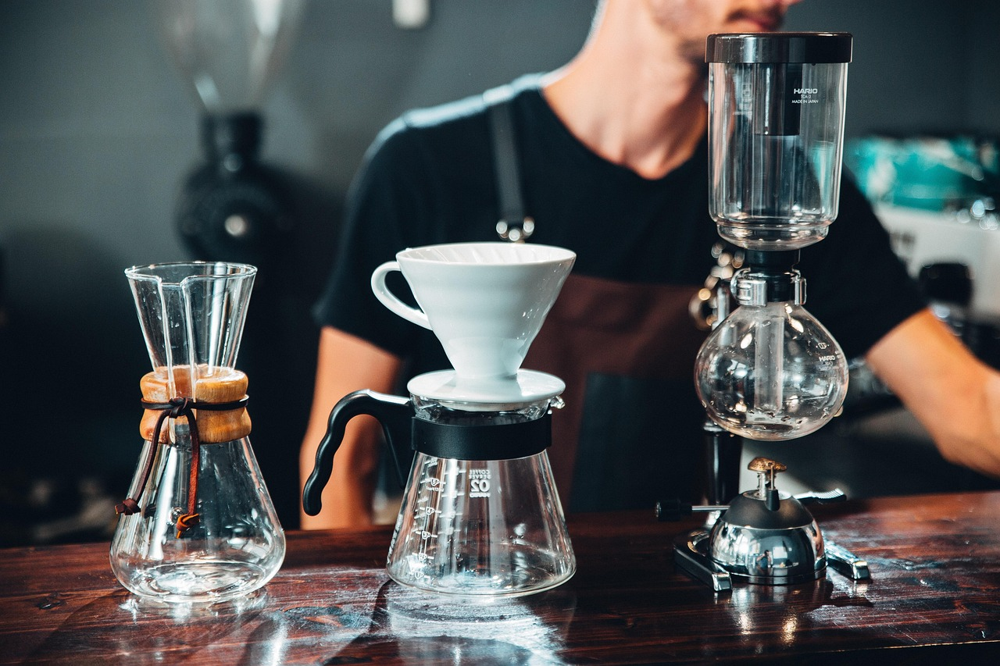
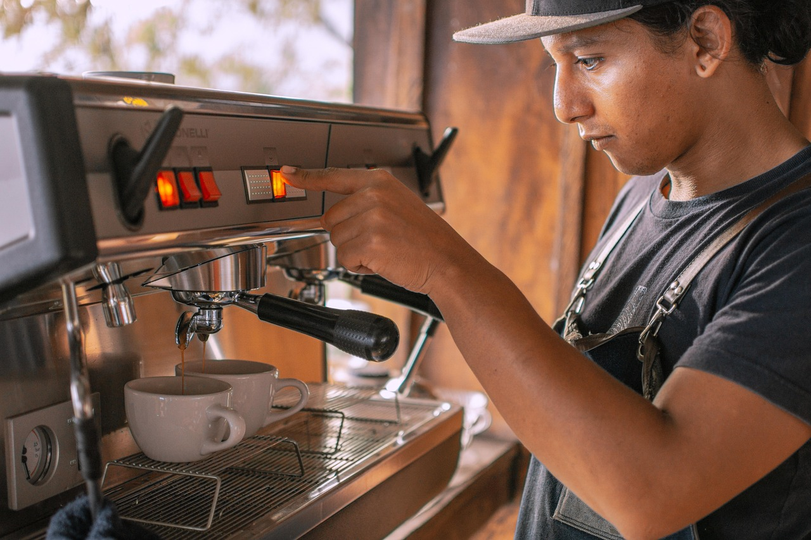

NotteCafe
Cafea de specialitate pe Bulevardul Mamaia, în Constanța.
Bucură-te de aroma cafelei adevărate: boabe atent alese, preparate pentru momente de răsfăț.
Deschis zilnic, între 07:00 și 18:00
Cafea de specialitate, pentru momente de răsfăț.
La Notte Cafe, boabele atent alese și pasiunea pentru cafea creează momente speciale pentru toți cei care iubesc gustul autentic.
Te întâmpinăm într-o atmosferă relaxată, potrivită pentru o pauză binemeritată sau pentru o întâlnire cu prietenii. La fiecare ceașcă descoperi o lume bogată de arome.

-
Cafea de specialitate
Folosim doar cafea de specialitate, cu boabe atent alese.
-
Atmosferă caldă
Un spațiu primitor, în care te relaxezi fără grabă.
-
Pauză binemeritată
Un loc liniștit pentru cafeaua de fiecare zi.
Ritualul unei cafele bune
Preparată cu răbdare, servită cu grijă, băută fără grabă.



Treci pe la noi
- Adresă
- Bulevardul Mamaia 112A,
Constanța - Program
- Zilnic, 07:00 – 18:00
Deschis zilnic, între 07:00 și 18:00 - Telefon
- +40 760 458 846